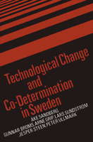

<body bgcolor="#FFFFFF" text="#000000" link="#0000FF" vlink="#CC0000" alink="#CC0000"><center><hr width="350" size="1" align="center" noshade>Examining how labor unions and corporations negotiate and cooperate on job design and computerization and technological change in the workplace<hr width="350" size="1" align="center" noshade><p><a href="https://cdcshoppingcart.uchicago.edu/Cart/ChicagoBook.aspx?ISBN=9780877229186&&PRESS=temple" target="_top">Buy this book!</a> | <a href="https://cdcshoppingcart.uchicago.edu/Cart/Cart.aspx?PRESS=temple" target="_top">View Cart</a> | <a href="https://cdcshoppingcart.uchicago.edu/Cart/Cart.aspx?PRESS=temple" target="_top">Check Out</a></p><p></p></center><!--none//--><h1>Technological Change and Co-Determination in Sweden</h1>
<h3>흆e Sandberg with Gunnar Broms Arne Grip Lars Sundstrom Jesper Steen and Peter Ullmark, foreword by Andrew Martin</h3>
<P>cloth 0-87722-918-X $59.50, Jun 92, <FONT COLOR=#990033>Out of Stock Unavailable</FONT>
<BR> 360 pp
6x9
</P><h3 align="center"><P><font color="#996633">Abel Wolman Award, Public Works Historical Society,
1989</font></P>
</H3>
<p>In this book, 흆e Sandberg and his colleagues examine how labor unions and corporations negotiate and cooperate on job design and computerization and technological change in the workplace. The research team at the <I>Arbetslivscentrum</I> (The Swedish Center for Working Life) examines organizational problem-solving, from planning and research to resolution. They rely on four illustrative case studies: a Swedish dairy, Postgiro (an office processing payments to postal check accounts), an engineering workshop, and a sugar mill. Building on these studies, the authors compare union participation in modifying and modernizing Swedish work environments to union participation in similar situations elsewhere in Europe and the United States.
<p>This book is the first systematic overview and presentation of social science-oriented and union-oriented worklife research in Sweden. It applies these disciplines to the major organizational changes made possible by the Swedish laws on co-determination&#151the laws that regulate and encourage joint involvement by union and management in the decision-making process of the organization, especially with regard to technological advancements.
<BR>&nbsp;<h2>Excerpt</h2><P>Excerpt available at <a href="http://www.temple.edu/tempress">www.temple.edu/tempress</a></p>
<BR>&nbsp;<h2>Contents</h2><P>
<p>Tables and Figures
<br>Foreword &#150 Andrew Martin
<br>Preface
<br>Acknowledgments
<br>Abbreviations and Acronyms
<br>1. Introduction
<br>2. Industrial Relations and Co-Determination
<br>3. Innovations in Production and Work Organization
<br>4. Local Unions and Technological Change
<br>5. Case Studies: The Diary and the Postgiro
<br>6. Case Studies: The Engineering Workshop and the Sugar Mill
<br>7. Implications of the Case Studies
<br>8. Comparative Perspectives
<br>9. Multilevel Technology Strategies
<br>10. "New Management" and Good Jobs
<br>Appendix: Some Labor Laws and Agreements
<br>References
<br>Index
<br>About the Authors
</P><BR>&nbsp;<H2>About the Author(s)</H2>
<P><b>흆e Sandberg</b> is Research Director at Arbetslivscentrum and Professor in the Department of Industrial Economics and Management at the Royal Institute of Technology, Stockholm.</P>
<BR><H2>Subject Categories</H2>
<p><A HREF="/tempress/labor.html" TARGET="_top">Labor Studies and Work</a>
</p>
<BR><h2 class="inpageheading">In the series</H2>
<P><I><a href="http://www.temple.edu/tempress/labor_change.html" onMouseOver="window.status='Click for other books in this series!'; return true;" onMouseOut="window.status=''; return true;" target="_top">Labor and Social Change</a></i>, edited by Paula Rayman and Carmen Sirianni.
</p><p><i>Labor and Social Change</i>, edited by Paula Rayman and Carmen Sirianni, includes books on workplace issues like worker participation, quality of work life, shorter hours, technological change, and productivity, as well as union and community organizing and ethnographies of particular occupations.</p>
<p align="center"><a href="https://cdcshoppingcart.uchicago.edu/Cart/ChicagoBook.aspx?ISBN=9780877229186&&PRESS=temple" target="_top">Buy this book!</a> | <a href="https://cdcshoppingcart.uchicago.edu/Cart/Cart.aspx?PRESS=temple" target="_top">View Cart</a> | <a href="https://cdcshoppingcart.uchicago.edu/Cart/Cart.aspx?PRESS=temple" target="_top">Check Out</a></p><p><font face="Arial" size="1"><a href="copyright.html" onMouseOver="window.status='Web Copyright Policy';return true;" onMouseOut="window.status=''" title="Web Copyright Policy">&copy;</a> 2015 <a href="http://www.temple.edu" target="new" onMouseOver="window.status='Link to Temple University home page';return true;" onMouseOut="window.status=''" title="Link to Temple University home page">Temple University</a>. All Rights Reserved. http://www.temple.edu/tempress/titles/446_reg.html</font></p>